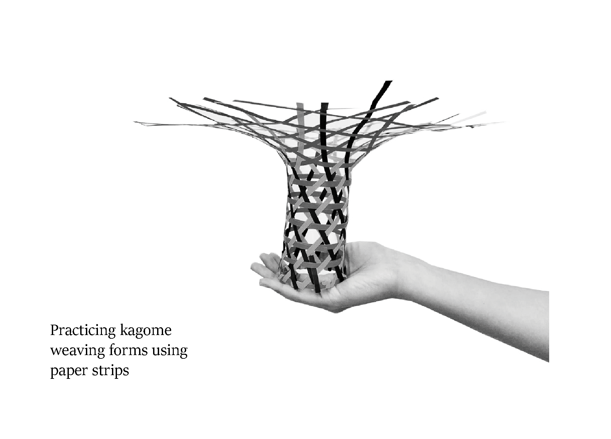

Kagome-Weave Bamboo Pavilion
Interior Installation @ 1:2 scale
01-05/2021
Bacherlor's Building Technology Elective Project
In collaboration with Coco Tang, Henrik Sit, Zoe So, Jenny Chung, Beryl WongKagome weaving is a tri-axial material interlacing system usually done with bamboo strips. Originally a traditional Japanese handcraft, kagome weaving can be extended in its application beyond the traditional domain of basket-making and be transferred to producing contemporary architecture. After a series of workshops weaving more simple forms, we came to understand the technique and ‘language’ of kagome weaving to control and design forms of more complicated curvatures.
This led to the final project of the design and fabrication of a 1:2 scale bamboo pavilion. Through evidence-based design involving both digital and hands-on experimentation, our final design was akin to an enneper surface with three openings to the pavilion. We explored the intrinsic relationship between fabrication, material, craftmanshand technology, and properties of bamboo.
{kind=link}
{kind=link}